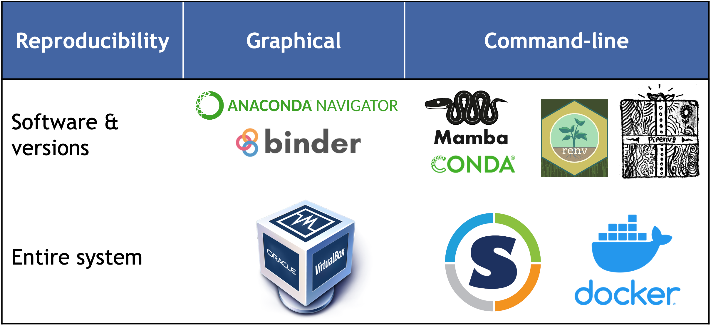

FAIR environments
Understanding the importance of computational environments is crucial for ensuring the consistency and reliability of research outcomes. These environments can vary significantly between systems, including different in operating systems, installed software, and software package versions. When a research project is transferred to a different computer or platform, analyses may fail to run or yield inconsistent results, particularly if the software depends on specific configurations or libraries. Dependencies can evolve over time or lack proper documentation, creating hidden variations between setups. Consequently, merely knowing a software version may not guarantee consistent performance across different environments, highlighting the need for robust management strategies.
To address these challenges, project and package managers offer valuable solutions for organizing software in isolated environments. For research to be reproducible, the original computational environment must also be recorded so others can replicate it accurately. This involves making your code easy to install and run by others, document the setup process thoroughly, and carefully manage and share your software environment.
If you’re developing your own tools/pipelines, here’s is the hard truth:
- If your code isn’t easy to install, no one will bother using it.
- If you don’t document how to run it, people will be left guessing—and probably give up.
- Lastly, if you don’t carefully control and share your software environment, even you might struggle to get the same results later on.
There are several methods to achieve this:
Environment package managers: provide an isolated environment with specific packages and dependencies that can be installed without affecting the system-wide configuration. These environments are particularly useful for managing conflicting dependencies and ensuring reproducibility. Configuration files can automate the setup of the computational environment:
- conda or mamba: allows users to export environment specifications (software and dependencies) to YAML files enabling easy recreation of the environment on another system. Conda disadvantage: long-term reproducibility.
- Python
virtualenvandpipenv: are a tool for creating isolated environments to manage dependencies specific to a project. - requirements.txt: may contain commands for installing packages (such as pip for Python packages or apt-get for system-level dependencies), configuring system settings, and setting environment variables. Package managers can be used to install, upgrade and manage packages.
- R’s
renv: The ‘renv’ package creates isolated environments in R.
Environment descriptors: refer to various types of metadata or attributes that provide information about the computational environment in which software or applications are running (e.g.
__version__,sessionInfo()). Check more useful commands here.
Kernel mechanisms such as chroot, namespaces and control groups can also be used for process isolation and resource management.
Kernel mechanisms- Chroot (filesystem isolation): changes the directory for a process, isolating its filesystem view from the rest of the system so that the process can only access files within a specified directory tree.
- Namespace (process isolation): isolates processes from each other by creating separate namespaces for various resources such as process IDs, network interfaces, and filesystems. Processes within the same namespace can interact with each other, but they are isolated from processes in other namespaces.
- Control groups (resource management): manage and limit the amount of system resources that processes can use which ensures that they cannot exceed their allocation resources and helps maintaining the overall system performance and stability.
Containerization platforms (e.g., Docker, Singularity): allow the researcher to package their software and dependencies into a standardized container image.
Virtual Machines (e.g., VirtualBox): can share an entire virtualized computing environment (OS, software and dependencies).
More on Virtual MachineVMs simulate a complete operating system, including virtualized CPU, RAM, and storage. They are highly isolated, providing a separate environment for each VM. While VMs offer excellent isolation, they can be slow due to the overhead of simulating hardware and have large images that are cumbersome to share. VMs also require data transfer over the network to interact with the host system, which can be inefficient.
While package managers are very easy to use and share across different systems, and are lightweight and efficient, offering fast start-up times, containers provide an even greater level of isolation by virtualizing the entire operating system, making it possible to deploy applications seamlessly across various machines without requiring additional installations. Unlike Virtual Machines, which also virtualize hardware, containers encapsulate applications and their dependencies, ensuring that they function uniformly regardless of the underlying infrastructure. This approach enhances reproducibility and streamlines the deployment process, making it a powerful tool for researchers seeking to maintain consistent results in diverse computing environments.

Recording and sharing the computational environment is essential for ensuring reproducibility and transparency. Below, we will explore two tools that can help with this: mamba, a package manager, and Docker, a container system. We will explain the differences between them and provide guidance on choosing the right tool for your specific scenario.
Package managers
When coding, it’s crucial to ensure that projects are developed under consistent software conditions. The packages and libraries (dependencies) used during development should remain unchanged throughout the project to prevent issues like variations in output formats or conflicts from new algorithm implementations, which can be difficult to trace. Environment and package managers allow users to create isolated frameworks (environments) where specific packages can be installed without affecting other software outside the environment. For even greater isolation, containers can be used (see the related section on this page).
| Link | Description |
|---|---|
| Conda | A widely-used and user-friendly environment manager |
| Getting started with conda | Official guide to setting up and using conda |
| Conda cheat sheet | Quick reference for conda usage |
| YARN | An alternative to conda |
Mamba is a reimplementation of the Conda package manager in C++. While our focus will be on Mamba, it’s important to note that it maintains compatibility with Conda by using the same command-line parser, package installation and uninstallation code, and transaction verification routines.
Mamba uses software installation specifications that are maintained by extensive communities of developers, organized into channels, which serve as software repositories. For example, the “bioconda” channel specializes in bioinformatics tools, while “conda-forge” covers a broad range of data science packages.
As previously mentioned, mamba is a newer and faster implementation. The two commands can be used interchangeable (for most tasks). If you use Conda, you should still complete the exercises, as you’ll gain experience with both tools. For more information on their ecosystem and advantages here.
Mamba allows you to create different software environments, where multiple package version can co-exit on your system.
Follow mamba instructions to install it. Let’s also include bioconda and conda-forge channels which will come very handy.
conda config --add channels defaults; conda config --add channels bioconda; conda config --add channels conda-forgeNow you are set to create your first environment. Follow these steps:
- Create a new environment named myenv
- Install the following packages in
myenv:bowtie2,numpy=1.26.4,matplotlib=3.8.3 - Check the environments available
- Load/activate the environment
- Check which
pythonexecutable is being used and that bowtie2 is installed. - Deactivate the environment
Here are some of the commands you need for the exercise.
# use conda or mamba commands
mamba create -n <ENV-NAME>
mamba install --channel <CHANNEL-NAME> --name <ENV-NAME>
mamba env list
# mamba init
mamba activate <ENV-NAME>
mamba deactivate - The syntax to create a new environment is:
mamba create --name myenv - Example “bowtie2”: Go to anaconda.org and search for “bowtie2” to confirm it is available through Mamba and which software channel it is provided from. You will find that it is available via the “bioconda” channel: https://anaconda.org/bioconda/bowtie2. The syntax to install packages is:
mamba install --channel <CHANNEL-NAME> --name <ENV-NAME> <SOFTWARE-NAME>
mamba install --name myenv --channel bioconda bowtie2=2.5.3 "matplotlib=3.8.3" "numpy=1.26.4"
Do the same with the others.
- To see al environments available
mamba env list. There will be a “*” showing the one is activated. - Load the environment
mamba activate myenv. which python-> should print the one in the environment that is active (path similar to/home/mambaforge/envs/myenv/bin/python).bowtie2 --help- Conda deactivate
If you have different environments set up for various projects, you can switch between them or run commands directly within a specific environment using:
mamba run -n <ENV-NAME> python myscript.pyIf you need to activate an environment in a shell script that will be submitted to SLURM, you must first source Mamba’s configuration file. For instance, to load the myenv environment we created, the script would include the following code:
# Always add these two commands to your scripts
eval "$(conda shell.bash hook)"
source $CONDA_PREFIX/etc/profile.d/mamba.sh
# then you can activate the environment
mamba activate myenvWhen jobs are submitted to SLURM, they run in a non-interactive shell where Mamba isn’t automatically set up. By running the source command, you ensure that Mamba’s activate function is available. It’s important to remember that even if the environment is loaded on the login node, the scripts will execute on a different machine (one of the compute nodes). Therefore, always include the command to load the Mamba environment in your SLURM submission scripts.
Base environment
It is the primary environment that contains the conda package manager itself. It is activated by default unless indicated.
Your command prompt will show which env is activated within parentheses.
(base) [username@node-01 ~]$To enhance package installation performance, we will update conda to utilize the libmamba solver (check documentation here), which significantly improves the speed of installing multiple packages concurrently.
# Installation
conda install -n base --yes conda-libmamba-solver
# configuration
conda config --set solver libmamba Avoid modifications to the base environment. This is the only instance where you should perform installations within the base environment, as any further changes could jeopardize the integrity of the conda installation.
A common practice is to disable the automatic activation of the base environment. There are several reasons but it helps creating a more organized and efficient workflow (e.g. activation time), reduce potential errors (e.g. unintended modifications), and maintain better control over your development environment.
conda config --set auto_activate_base falseContainers
Essentially, a container is a self-contained, lightweight package that includes everything needed to run a specific application—such as the operating system, libraries, and the application code itself. Containers operate independently of the host system, which allows them to run the same software across various environments without any conflicts or interference. This isolation ensures that researchers can consistently execute their code on different systems and platforms, without worrying about dependency issues or conflicts with other software on the host machine.
| Link | Description |
|---|---|
| Docker | An open source widespread container that is popular both in research and industry |
| Docker course | A course to use Docker, freely hosted on youtube |
| Docker curriculum | Beginner introduction to docker |
| Docker basics | Introduction tutorials to Docker from the official documentation page |
| Singularity | Singularity is another containerization tool. It allows you to decide at which degree a container interacts with the hosting system |
| Singularity tutorial | A well done Singularity tutorial for HPC users |
| Singularity video tutorial | A video tutorial on Singularity |
| Reproducibility by containerization | A video on reproducibility with Singularity containers |
The most significant difference is at the permission level required to run them. Docker containers operate as root by default, giving them full access to the host system. While this can be useful in certain situations, it also poses security risks, especially in multi-user environments. In contrast, Singularity containers run as non-root users by default, enhancing security and preventing unauthorized access to the host system.
- Docker is ideal for building and distributing software across different operating systems
- Singularity is designed for HPC environments and offers high performance without needing root access
In the following sections, we’ll cover how to retrieve environment information, utilize containers, and automate environment setup to improve reproducibility.
Singularity on a remote server
While you can build your own Singularity images, many popular software packages already have pre-built images available from public repositories. The two repositories you’ll most likely use or hear about are:
# You will only need to vagrant init once
export VM=sylabs/singularity-3.0-ubuntu-bionic64 && \
vagrant init $VM && \
vagrant up && \
vagrant ssh- We recommend using the pre-installed version provided by your system administrators if you’re working on a shared system. If you’re working on your own computer, you can install the necessary software using Mamba.
- They might host different versions of the same software, so it’s worth checking both to find the version you need.
- To download a software container from public repositories, use the
singularity pullcommand. - To execute a command within the software container, use the
singularity runcommand. - Good practice: create a directory to save all singularity images together.
.sifis the standard extension for the images.
Download a singularity image from one of the two repositories listed above (choose a software like bcftools, bedtools, bowtie2, seqkit…) and run the --help command. This command displays the help documentation of the program, verifying that our image is functioning correctly and includes the intended software.
# create a directory for our singularity images
mkdir images
# download the image
singularity pull images/bowtie2-2.5.4.sif https://depot.galaxyproject.org/singularity/bowtie2%3A2.5.4--he20e202_2
# run the image: singularity run <PATH-TO-IMAGE> <YOUR COMMANDS>
singularity run images/bowtie2-2.5.4.sif bowtie2 --helpSources
- Anaconda for searching Mamba/conda packages
- Bioconda for installing software package related to biomedical research
- Conda cheat sheet
- faircookbook worflows
- Conda blog freecodecamp
- Docker
- Docker get-started
Find pre-built singularity images:
Other training resources:
- The turing way - reproducible research
- HPC intro by Cambridge
- Highly recommend Reproducible Research II: Practices and Tools for Managing Computations and Data by members of France Université Numérique.